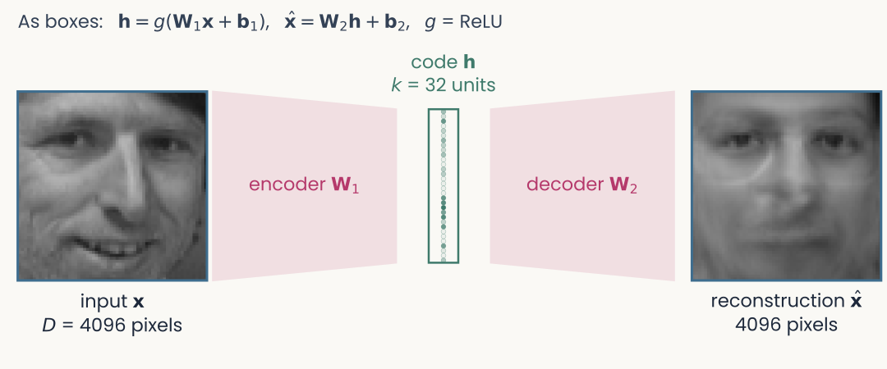
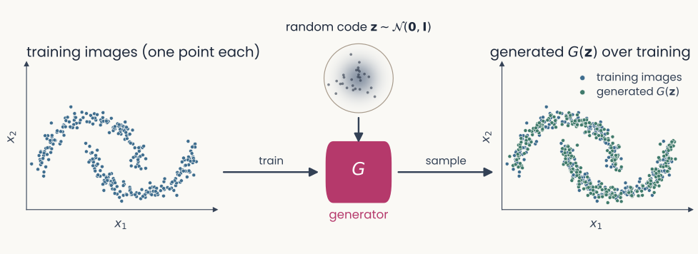
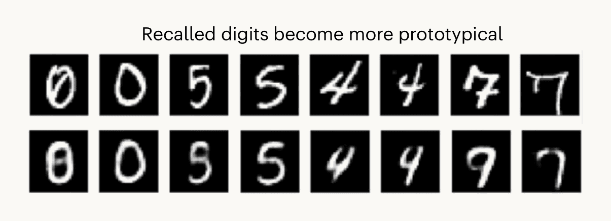
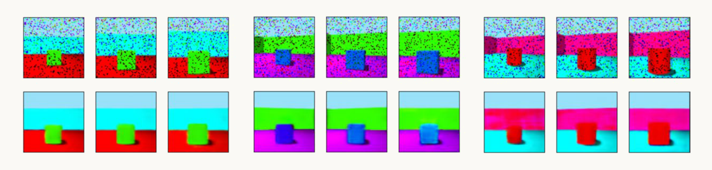
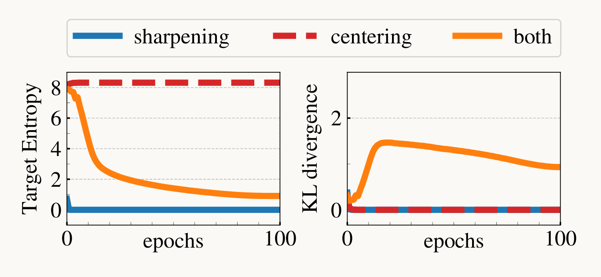
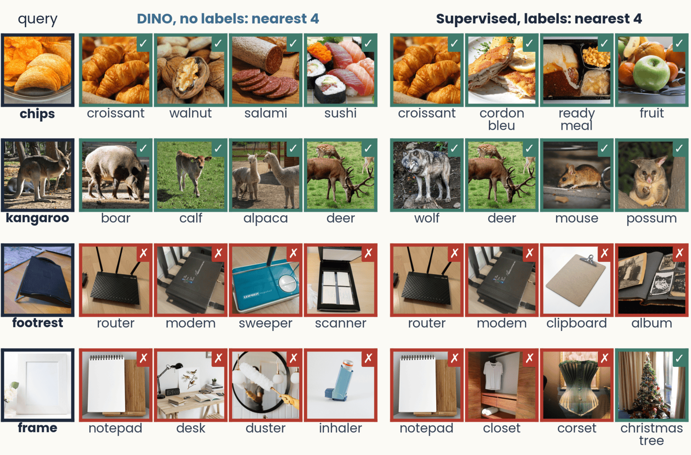
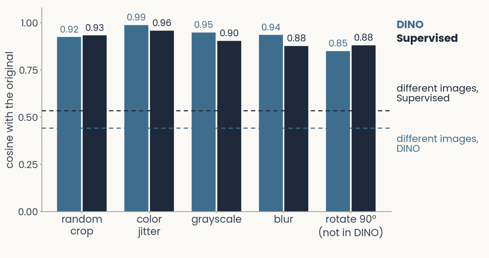
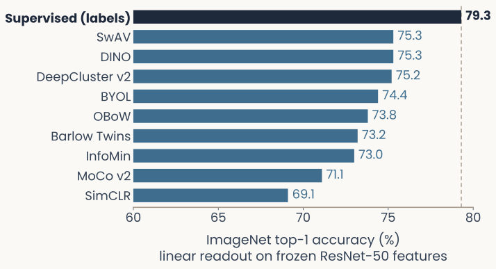
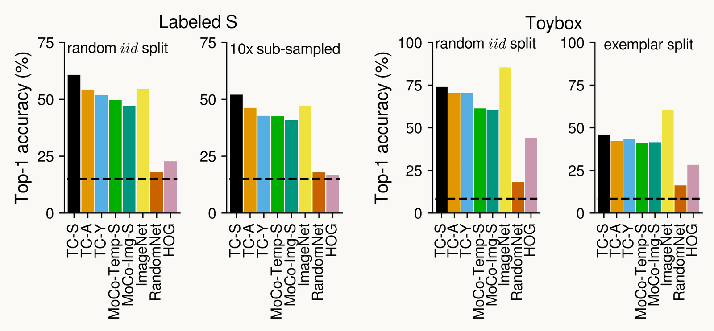
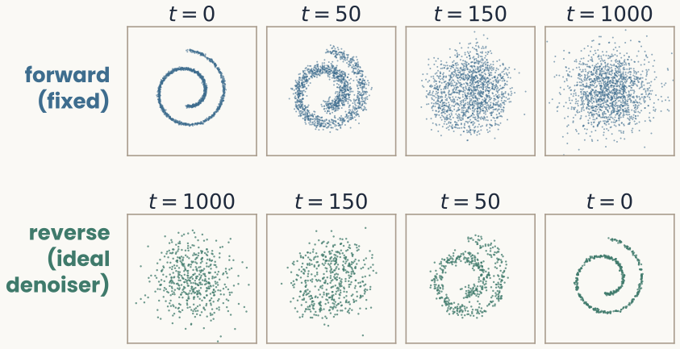

Learning without labels
Reader-friendly version of the 52 lecture slides: the lecture content in normal flow, with figure descriptions and data tables where the figure carries data. Open the presentation.
Slide 2
Learning without labels
How can a network learn useful features without category labels? Rebuild the input, match views, predict what is hidden. Then: what do brains do?
Slide 3
From AlexNet to today
![Scatter plot of ImageNet multilabel accuracy, 60 to 97.5 percent, against training computation in floating-point operations from 10 to the 18 to 10 to the 24, for 40 image encoders released between 2012 and 2025. Accuracy rises from AlexNet near 62 percent to a cluster inside the gray band of trained human annotators, about 92 to 97 percent. Points are colored by objective: supervised black, self-supervised blue, image-text orange, video yellow; circles are CNNs, diamonds transformers, a square the MambaVision hybrid; gray markers are the 2012 to 2018 models. DINOv3, self-supervised, and several image-text transformers sit at the top right, inside the human band. Qwen3-VL is plotted separately at right because its training computation is unpublished.](../images/L14/serre2026_annrev_fig1_scaling.png)
Scatter plot of ImageNet multilabel accuracy, 60 to 97.5 percent, against training computation in floating-point operations from 10 to the 18 to 10 to the 24, for 40 image encoders released between 2012 and 2025. Accuracy rises from AlexNet near 62 percent to a cluster inside the gray band of trained human annotators, about 92 to 97 percent. Points are colored by objective: supervised black, self-supervised blue, image-text orange, video yellow; circles are CNNs, diamonds transformers, a square the MambaVision hybrid; gray markers are the 2012 to 2018 models. DINOv3, self-supervised, and several image-text transformers sit at the top right, inside the human band. Qwen3-VL is plotted separately at right because its training computation is unpublished.
Open full-size figure- 40 image encoders, AlexNet in 2012 to 2025, measured alike. Accuracy climbs from about 60% to the range of trained annotators (gray)
- DINOv3 took about 300,000 times the computation of AlexNet. At AlexNet's 2012 rate, that is about 4,500 years of training
Slide 4
What made scale pay off
Scatter plot of ImageNet multilabel accuracy, 60 to 97.5 percent, against training computation in floating-point operations from 10 to the 18 to 10 to the 24, for 40 image encoders released between 2012 and 2025. Accuracy rises from AlexNet near 62 percent to a cluster inside the gray band of trained human annotators, about 92 to 97 percent. Points are colored by objective: supervised black, self-supervised blue, image-text orange, video yellow; circles are CNNs, diamonds transformers, a square the MambaVision hybrid; gray markers are the 2012 to 2018 models. DINOv3, self-supervised, and several image-text transformers sit at the top right, inside the human band. Qwen3-VL is plotted separately at right because its training computation is unpublished.
Open full-size figure- Self-supervised learning (blue) trains on huge image collections with no category labels; image–caption models (orange) skip them too. The most accurate models learned without category labels. Today
- The transformer (diamonds): an architecture that trains well at scale. A later lecture
Slide 5
The label problem
- Most networks so far learned from labels: each input came with the right answer . The ImageNet benchmark alone has 1.2 million images labeled by hand
- An infant sees millions of scenes and is told the name of almost none. Much of what a visual system learns must come without labels
- Unsupervised learning, the first half of today: no labels. PCA, the autoencoder and sparse coding find structure in the inputs alone
- Self-supervised learning, the second half, builds on it: make training targets from the data, hide part and predict it, or match two views. No human labels, and the machinery of supervised learning
Slide 6
What does a network learn from its inputs alone?
Write rebuilding the input as a loss, squeeze it through a narrow layer, and let gradient descent find the weights
Slide 8
The autoencoder

The same autoencoder with the units and weights collapsed into boxes: the input face, a magenta encoder trapezoid W1 narrowing to the 32-unit code column, a decoder trapezoid W2 widening to the reconstructed face; faces, code and labels are in the same places as in the unit-by-unit frame
Open full-size figure
- Units and weights as usual. The encoder maps ( numbers) to a code ( numbers); the decoder rebuilds . With (undercomplete), the bottleneck forces the code to keep what matters most for rebuilding it
Computed: a 4096–32–4096 network trained on 300 Olivetti faces; a held-out face
Slide 9
The reconstruction loss
The target is the input: no labels, nothing but the data. This is unsupervised learning: the network learns from its inputs alone, as PCA did.
- Train with backprop: the error goes back through the decoder, then the encoder
Slide 10
Nonlinear autoencoders go beyond PCA

Two panels of 300 points on a noisy half circle in two dimensions, each point joined by a faint line to its reconstruction. Left, linear autoencoder with a one-unit code: the reconstructions lie on a straight horizontal line, mean squared error 0.107. Right, nonlinear autoencoder with a one-unit code: the reconstructions follow the arc, mean squared error 0.002
Open full-size figure- A nonlinear encoder passes each weighted sum through (ReLU, tanh) and stacks layers. Without : a flat subspace, PCA's (left). With on both sides: a curved manifold (right).
Computed: toy data, 300 points on a noisy half circle
Slide 11
Sparse coding: rebuild from a few basis functions

One 16 by 16 whitened image patch, shown to be approximately equal to the sum of three learned basis functions, each an oriented stripe pattern multiplied by its coefficient, plus a few more basis functions. Below, a stem plot of the patch's 256 code coefficients, almost all exactly zero
Open full-size figureComputed: 16 × 16 patches of whitened natural photographs
- Rebuild each patch from a few of 256 small images, the basis functions. Learned with no labels, they resemble V1 simple-cell receptive fields
- Loss: , reconstruction plus L1 regularization on the code. Unlike L2, L1 sets small values to zero, so no bottleneck is needed, even with more functions than pixels (overcomplete)
Slide 12
Generative models: the decoder as a generator

Three panels. Left, training points: a two-dimensional set of blue dots shaped like two interleaved arcs. Middle, a round Gaussian ball labeled z drawn from a standard normal, with an arrow into a box labeled G, the generator. Right, green generated points from G overlaid on the blue training points, landing where the data are
Open full-size figure
- A generative model learns a map G from random codes to data. Trained well, its samples land where the training images are. An autoencoder's decoder maps codes to images. To sample new images, we also need a distribution over codes
- Three ways to train G: a variational autoencoder makes the encoder's codes Gaussian, so random codes decode; a GAN trains G to fool a critic that tells real from generated; a diffusion model learns to remove a little noise, then repeats that from pure noise
Slide 13
A model of memory: consolidation as training an autoencoder

Schematic of Spens and Burgess's model: a hippocampus box of memory and feature units sits above two sensory-neocortex columns with a small latent-variable layer between them. Red arrows, the autoassociative teacher network, run from the sensory neocortex up to the hippocampus and back down; blue arrows, the generative student network, run from the sensory neocortex to the latent variables and back via the hippocampal formation; a purple arrow from the latent variables points to semantic memory
Open full-size figure- Episodic memory recalls one event; semantic memory stores facts. Consolidation is the slow reorganization of memory after learning
- Teacher (red): the hippocampus stores an episode at once, then replays it
- Student (blue): an autoencoder trains on the replays. As it learns, it relies less on the stored trace
- Recall is reconstruction: cue to code, code to episode. The code itself serves as semantic memory
Slide 14
Why memory is wrong in the way it is

Two rows of eight handwritten MNIST digits, 0 0 5 5 4 4 7 7. The top row shows the inputs with their individual quirks; the bottom row shows the autoencoder's recall of each, in which pairs from the same class have become more alike and more typical of their digit
Open full-size figure

Three scenes, each shown three times with noise: zoomed out, at the training view and zoomed in (top row); below each, the autoencoder's reconstruction, which returns the scene toward the typical view, widening close-ups and tightening distant views
Open full-size figure
- A code keeps what is typical and the decoder fills in the rest. Recalled digits become more prototypical (top); close-ups are recalled wider, as in human boundary extension (bottom). Reconstruction predicts errors of this kind; the resemblance supports the model without proving it
Slide 15
From rebuilding to predicting
Self-supervised learning: hide part of the data and predict it
Slide 16
Why rebuilding everything you saw is not enough

From Balestriero and LeCun: two ResNet-34 autoencoders give near-identical reconstructions of stereos and equal reconstruction loss, yet test accuracy with a linear readout is about 60 against 87 percent
Open full-size figure- Good pictures do not mean good features: two autoencoders with the same reconstruction loss score about 60% and 87% on a readout (left; the better one also got a supervised signal)
- An autoencoder trained on ImageNet predicts macaque V4 no better than an untrained network (Zhuang et al. 2021, later today)
- Change the task: predict something the network does not see
Slide 17
Make the data label itself
- Self-supervised learning (SSL): make training targets from the data. Here the target is something the network does not see: a hidden patch, the other view of an image
- Pretext task: the made-up problem we train on (rotation, a hidden patch, the other view of an image); the task's output layer is thrown away and the encoder is kept
- Downstream task: the task we care about. Reuse the encoder: freeze it and fit a readout, or fine-tune it
- The bet: a good pretext task forces the network to learn the structure the downstream task needs
Slide 18
Early pretext tasks

One cat photograph transformed for four tasks. Rotation: the photo turned 90 degrees, predict the angle. Jigsaw: its nine tiles shuffled, predict the shuffle. Relative position: two neighboring patches, predict where the red one lies relative to the blue. Colorization: the gray-level photo, predict the colors
Open full-size figure- The answer comes from the photograph, with no human labels. To say which way is up, a network must know something about cats. Decent features, not great; what replaced them follows
Slide 19
Attraction: two views of one image should agree

One cat photograph and five random views of it: a crop, a crop and flip, a color-jittered version, a gray-level version and a blurred version
Open full-size figure- A view is a transformed copy of a photograph. Two views of one photograph should give the same output. The only "label" is which photograph a view came from
- What the views change is what the network learns to ignore. Crops teach it to ignore position, color jitter to ignore color
- Attraction alone has a trivial solution, collapse: give every image the same output. All views agree, and nothing is learned
Slide 20
Add repulsion: find your partner in the batch

One crop of a cat on the left, seven candidates on the right: a koala, a dog, a car, another crop of the same cat outlined in red, bananas, a chair and a teapot. Bars show a schematic probability for each, 0.86 for the other cat crop and at most 0.06 for the others
Open full-size figure- Each view must pick its partner among the rest of the batch. This is softmax classification, the machinery you already know, and the correct class is "the other view of my photograph"
- Getting it right pulls partners together and pushes everything else apart. Repulsion is what prevents collapse. This is SimCLR; the loss is called InfoNCE
Slide 21
Try it: choose the views
Slide 22
Attraction plus repulsion: where it excels

Heat map from Chen et al. of linear readout accuracy for pairs of augmentations on ResNet-50. Crop with color stands out at 56.3 and 55.8; most single transforms are low, crop alone 33.1
Open full-size figure- A big step on a ResNet-50: linear readout 69%, against 60 to 64% for earlier methods
- With only 1% of the labels: top-5 accuracy 75%, against 48% for supervised training on those same labels
- It depends on the views. In a one-branch test, crop alone: 33%. Crop plus color: 56%
Slide 23
Attraction plus repulsion: where it fails

Schematic from Chuang et al.: a golden retriever, an augmented view of it as the positive, and negatives: a cat, an airplane and a second golden retriever outlined in red as a false negative
Open full-size figure- False negatives: two different dogs get pushed apart. With 30 negatives on CIFAR-10: about 80% accuracy, 88% if negatives truly differ in class
- Lost information: learning to ignore a change means not being able to report it. Rotation is decoded at 68% from the encoder, 26% from the training head on top of it (chance 25%)
- Batch size: repulsion benefits from many negatives: default 4096 images, though smaller batches can come close
Slide 24
Drop repulsion: DINO matches a slowly updated copy

Schematic from the Annual Review chapter: one view of a cat goes through the encoder, another view goes through a dashed box labelled encoder, running-average copy. The first output is trained to predict the second, the target, compared in features
Open full-size figure- No negatives. One network sees a view and predicts the output, a probability distribution, of a copy of itself on another view. The copy's weights are a running average of the network's own, so it changes slowly
- Why no collapse? The slow copy, plus two small corrections to its output, centering and sharpening. What DINO adds: attraction alone can work, with no false negatives. You have used its ResNet-50
Slide 25
DINO: the gain, and the balancing act

Two line plots from Caron et al. over 100 epochs. With only sharpening, or only centering, the KL divergence falls to zero, which means collapse. With both, it stays near 1
Open full-size figure
- ResNet-50, linear readout on ImageNet: DINO 75%, SimCLR 69%, supervised 79%
- Less fragile: with crops only, BYOL loses 13 points where SimCLR loses 28
- But the balance is delicate. Remove the slow copy: 0.1%, chance. Centering alone or sharpening alone: collapse (right, KL at zero)
Slide 26
What a ResNet learns with no labels

Grid for five photographs, cat, airplane, horse, car and bird. For DINO ResNet-50 and for a supervised ResNet-50, the first principal component of the last layer's spatial features and the similarity to a marked seed point. Both models mostly light up the object. DINO's map spills onto the blossom around the bird; the supervised map spills onto the cat's chest and the background beside the horse
Open full-size figure- The last layer of a DINO ResNet-50, a 25 × 25 map: its strongest spatial pattern (first PC), and similarity to a marked point
- With no labels, the features carry coarse information about where objects are. Fine edges come from the photo underneath
- Not better than labels: the supervised network does at least as well. Bird: DINO's first PC goes to the blossom
Slide 27
The same objective on a transformer

Figure 1 of Caron et al.: photographs with the self-attention map of a DINO vision transformer beneath each, outlining the object with no label, mask or box given
Open full-size figure- The same DINO objective on a vision transformer, an architecture you meet in a later lecture. The map shows which patches the network weighs when it summarizes the image
- No label, mask or box was given. Not a controlled comparison with the ResNet maps: other photographs, another kind of map
Slide 28
DINO's neighbors: success and failure

For four query photographs, the four nearest neighbors under DINO and under a supervised ResNet-50. Chips retrieve other foods and kangaroo other mammals under both, checked in green. Footrest retrieves routers and modems and frame retrieves a notepad and a desk, marked as wrong in red
Open full-size figure
- Nearest neighbor in the same category: DINO 60%, supervised 64%, chance 11%. Failures follow appearance: a dark ribbed footrest finds routers
Slide 29
Augmentations leave their mark

Bar chart of mean cosine similarity between an image and a transformed copy, for DINO and supervised ResNet-50. Random crop 0.92 and 0.93, color jitter 0.99 and 0.96, gray-level 0.95 and 0.90, blurring 0.94 and 0.88, rotation by 90 degrees, not in DINO's training, 0.85 and 0.88. Dashed lines show different images at 0.44 for DINO and 0.54 for supervised
Open full-size figure
- DINO holds still under the color and blur changes it trained on, more than the supervised network. Rotation was not among its views, and it is DINO's lowest bar
Slide 30
One recipe: pretrain once, read out cheaply

Horizontal bar chart of ImageNet top-1 accuracy for a linear readout on frozen ResNet-50 features. Supervised training with labels, 79.3 percent, in dark grey with a dashed guide line; self-supervised methods in blue: SwAV and DINO 75.3, DeepCluster v2 75.2, BYOL 74.4, OBoW 73.8, Barlow Twins 73.2, InfoMin 73.0, MoCo v2 71.1, SimCLR 69.1
Open full-size figure
- Same ResNet-50, same ImageNet photographs, no labels during training. A linear readout on the frozen features then names the thousand classes
- The best methods come within four points of a ResNet-50 trained with labels; SimCLR, about ten
- Pretrain once without labels, read out cheaply. The same recipe runs behind today's largest vision and language models
Replotted from Caron et al. (2021), Table 2
Slide 31
Drop the views: masked prediction

Schematic from the Annual Review chapter: a cat image with most patches hidden goes through an encoder and a decoder; the output is compared in pixels with the original
Open full-size figure- Hide most of the image, 75% of its patches, and rebuild them: an autoencoder that has to infer what it was not shown
- No second view, no negatives. A constant output cannot rebuild different images, so collapse is not the risk. What it adds: no dependence on hand-chosen views; the masking ratio is now the design choice
Slide 32
Masked prediction: real reconstructions

Bus, vase, zebras, mushrooms and vegetables reconstructed from 75, 85 and 95 percent hidden patches. Reconstructions blur as masking rises, and at 95 percent the green pepper disappears
Open full-size figure- From 25% of the patches, the bus and the zebras come back
- At 95% hidden, it still draws a plausible bus. But the green pepper is gone: filled in from what is typical, not from what was there
- Same logic as memory, earlier today
Slide 33
Masked prediction: excels at fine-tuning, weak on readout
| ImageNet top-1, same transformer | DINO | Masked prediction |
|---|---|---|
| Frozen encoder, linear readout | 78.2% | 68.0% |
| Fine-tuned encoder | 82.8% | 83.6% |
- Frozen means the encoder stays fixed after pretraining; fine-tuned means it keeps training on the labeled task
- On a ResNet-50, the convolutional version reaches 80.6% fine-tuned, against 79.8% for supervised training
- The features need more work from labels afterwards. Unfreezing one block lifts a large transformer from 73.5% to 81.0%
Slide 34
Three methods, each removing a dependence
| Attraction + repulsion (SimCLR) | Attraction only (DINO) | Masked prediction (MAE) | |
|---|---|---|---|
| Removes | labels | negatives | views |
| Prevents collapse by | repulsion | slow copy, centering, sharpening | targets differ image to image |
| Excels | few labels | frozen features: 78% against 68% | fine-tuning: 83.6% against 82.8% |
| Fails | false negatives; needs the right views | delicate balance | frozen readout |
In these comparisons, DINO gives stronger frozen features; masked prediction gains more from fine-tuning
Slide 35
Back to the scaling figure
Scatter plot of ImageNet multilabel accuracy, 60 to 97.5 percent, against training computation in floating-point operations from 10 to the 18 to 10 to the 24, for 40 image encoders released between 2012 and 2025. Accuracy rises from AlexNet near 62 percent to a cluster inside the gray band of trained human annotators, about 92 to 97 percent. Points are colored by objective: supervised black, self-supervised blue, image-text orange, video yellow; circles are CNNs, diamonds transformers, a square the MambaVision hybrid; gray markers are the 2012 to 2018 models. DINOv3, self-supervised, and several image-text transformers sit at the top right, inside the human band. Qwen3-VL is plotted separately at right because its training computation is unpublished.
Open full-size figure- DINOv3 pretrained on 1.7 billion images with no category labels. Others at the top use captions, or labels
- Few labels are needed afterwards: ten labeled images per ImageNet category, under 1% of the labels, give a linear readout of DINOv2 or DINOv3 about 87% multilabel accuracy. Most of what they know came from pretraining without labels
Slide 36
Does the brain need labels?
These methods learn useful features without category labels. Do those features predict neural responses, and what does experience teach?
Slide 37
Networks trained without labels predict V1, V4 and IT

Figure 2B of Zhuang et al. (2021): three bar plots of noise-corrected neural predictivity for V1, V4 and IT. Eleven unsupervised objectives, from autoencoder and PredNet through colorization and relative position to the contrastive methods, instance recognition, SimCLR and local aggregation, with an untrained network in white and the category-supervised network in black as controls. In IT the local aggregation bar reaches the supervised bar while the autoencoder stays near the untrained level
Open full-size figure- Same architecture, trained on ImageNet with no labels under eleven objectives, then read out to macaque V1, V4 and IT (linear predictivity); untrained in white, trained with labels in black
- The autoencoder is no better than an untrained network in V4. The strongest contrastive objectives (red bars) match the label-trained network in V1, V4 and IT
Slide 38
From static images to a stream of experience

Five pairs of images of one cat, input on the left and target on the right. Rebuild the input: the photo and itself. Predict what is hidden: a masked photo and the original. Match two views of one photo: two different crops. These three are bracketed as static images, what most models learn from. Match views close in time and predict the next view: slightly shifted frames, bracketed as a stream, what animals learn from
Open full-size figure- Rough counts: large models see about 10⁹ images in pretraining; a child gets 10⁸ to 10⁹ visual samples by age six, up to 4 × 10⁹ by early adulthood
- Most models learn from unrelated images; animals learn from a continuous stream. The main difference is less the amount of experience than its kind
Slide 39
Three learning signals in a stream
| Signal | What it is | What it can teach |
|---|---|---|
| Temporal continuity | an object persists across successive views | object constancy: recognizing an object despite changes in its retinal image |
| Common fate | parts that move together belong together | which regions form one object |
| Predictability | one view regularly follows another | what causes change: moving objects and their interactions |
- Each signal comes free with the stream, with no labels. Invariance alone is not enough: a representation that treated every image alike would be invariant too, so it must stay selective for object identity
Slide 40
Object constancy depends on temporal experience
Change how views follow each other in time, and tolerance changes:
- Monkeys: swapping an object's identity across eye movements reshaped the position tolerance of IT neurons
- Rats: reared with temporally shuffled movies, they had V1 neurons with less position tolerance, while orientation tuning was largely preserved
- Newborn chicks: slow rotation of one object supported recognition from new viewpoints; faster rotation favored familiar views
These are among the few neural laws of visual learning established so far. A model of temporal learning must reproduce them
Slide 41
Learning from time: one child's head camera

Head-camera video frames stacked along a time arrow. A group showing a white cat on a green cushion is labelled Class A, and a later group showing a living room with a couch is labelled Class B. The depth of each stack is the segment length
Open full-size figure- The data: about 200 hours of video from a camera on one child's head, between 6 and 32 months. No labels
- The task: cut the video into segments about 5 minutes long and train a convolutional network to say which segment a frame came from
- Frames close in time are mostly the same room and the same things. Time alone supplies the training labels
Slide 42
What one child's video taught, and what it did not

Four bar charts of top-1 accuracy for eight models. On Labeled S, the child-S temporal model is highest, about and 52%, above the ImageNet network. On Toybox, the ImageNet network is highest, about and 60%, against about and 45%. Untrained networks stay near 16 to
Open full-size figure
- Black: this network. Yellow: supervised ImageNet. Linear readout on that child's 26 categories (left panel): about 60%, against 54%; untrained, 18%
- New toy exemplars (far right): the ranking reverses, about 45% against 60%, dashed line chance. Slow change teaches useful features; one child's video generalizes less far
Slide 43
Where matching views fails, and what prediction adds
- Common fate, a failure: chicks reared with one moving object recognized it on new backgrounds. Self-supervised models trained on views or successive frames, in virtual versions of the same chambers, did not
- One possible explanation: matching whole views does not by itself require separating an object from its background
- Prediction, a candidate: a model predicting the next frame segmented objects by motion, and these segments taught a second pathway to see objects from form alone, in static images. Disabling prediction abolished the transfer
Scaling has so far increased the amount of experience models receive, not its kind. A project question
Slide 44
Recap
- Autoencoder: rebuild the input through a narrow code; the decoder is a generator, and a model of memory. Sparse coding: a few active units through L1 regularization
- Self-supervised learning: manufacture the labels from the input. Attraction + repulsion (SimCLR), attraction only (DINO), masked prediction (MAE): each removes a dependence and pays elsewhere. Pretrain once, read out cheaply
- Brains: category labels were not needed for these fits to V1, V4 and IT. A stream of experience offers three signals, temporal continuity, common fate and predictability, that models mostly do not yet use
- Three ways to get a representation close Theme 2: PCA, supervised backprop, and learning without labels
Slide 45
Looking ahead
- Next lecture, Tuesday: recurrent networks. Theme 3 opens with networks that keep a state over time, and a network that decides the way a monkey does
- Mon 11/9: the third assignment is due. Tue 11/10: the fourth is released
- Thu 11/19: project teams on Canvas. Tue 11/24: project proposal, one page per team. Today's question, does a network trained without labels predict a neural dataset (TVSD, Triple-N) as well as a supervised one, is a project
- Tue 12/1: Exam 2, on the second half of the course, including today
Slide 46
Further reading for the research trail
Optional. Any paper from any lecture qualifies; these are preferred.
- Chen et al. ICML 2020: SimCLR, and what each augmentation contributes
- Caron et al. ICCV 2021: DINO, learning from a running-average copy
- He et al. CVPR 2022: masked autoencoders, hide 75% of the image and rebuild it
- Zhuang et al. PNAS 2021: networks trained without labels predict V1, V4 and IT
- Spens & Burgess Nat Hum Behav 2024: consolidation as training a generative network
- Nagy, Török & Orbán PLoS Comput Biol 2020: memory distortions as lossy compression
- Matteucci & Zoccolan Sci Adv 2020: temporally shuffled rearing reduces V1 position tolerance
- Garimella et al. ICLR 2024: a newborn embodied Turing test, where models fail and chicks succeed
- Orhan, Gupta & Lake NeurIPS 2020: self-supervised learning on head-camera video from children
Slide 47
Minute paper
Submit on Canvas → Minute papers → Minute Paper 15 (access code read out in class).
Write three brief points in your own words:
- Pick one method from today (autoencoder, SimCLR, DINO or masked prediction). In your own words: what is the network asked to predict, and where does the answer come from, if not from a label?
- Something you do not yet understand, or a question still open
- Another idea you found interesting, and why it matters for brains, behavior or AI
Credit for a thoughtful attempt, not for being correct.
Slide 48
Going further
Diffusion, and the contrastive loss in equations and code
Slide 49
Diffusion in one picture

Two rows of four scatter plots of a two-dimensional swiss roll. Top row, forward: at t = 0 the points lie on a clean spiral; at t = 50 and 150 noise blurs and then hides it; at t = 1000 they form a round Gaussian blob. Bottom row, reverse: starting from a Gaussian blob at t = 1000, denoising step by step brings the points back onto the spiral by t = 0
Open full-size figure
- Forward: add a little Gaussian noise at every step. After enough steps the data are a featureless blob. Nothing is learned here
- Reverse: train a network to undo one step of noise. Start it from a blob, apply it step after step, and the spiral comes back. Generation is denoising, repeated, the engine of today's image and video generators
Slide 50
Try it: draw a shape, destroy it, bring it back
Slide 51
The InfoNCE loss
Cosine similarity and temperature . For a positive pair :
- Softmax cross-entropy where the "correct class" is the matching view: a batch of images gives views, and each view does a -way classification
- Familiar machinery, new label source. The temperature sets how hard the closest negatives push
Slide 52
PyTorch: the InfoNCE loss
import torch
import torch.nn.functional as F
def info_nce_loss(z, tau=0.5):
# z: (2B, d), two augmented views stacked; rows 0..B-1 pair with B..2B-1
z = F.normalize(z, dim=1) # cosine similarity = dot of unit vectors
sim = z @ z.T / tau # (2B, 2B) similarity matrix
n = z.shape[0]
sim.fill_diagonal_(float("-inf")) # a view is never its own positive
targets = (torch.arange(n) + n // 2) % n # the positive of row i is its partner view
return F.cross_entropy(sim, targets) # softmax cross-entropy: which row is my match?
- Cross-entropy over the batch: the positive view is the "correct class"
- The supervised toolkit, cross-entropy and backprop, unchanged; only the label source changed